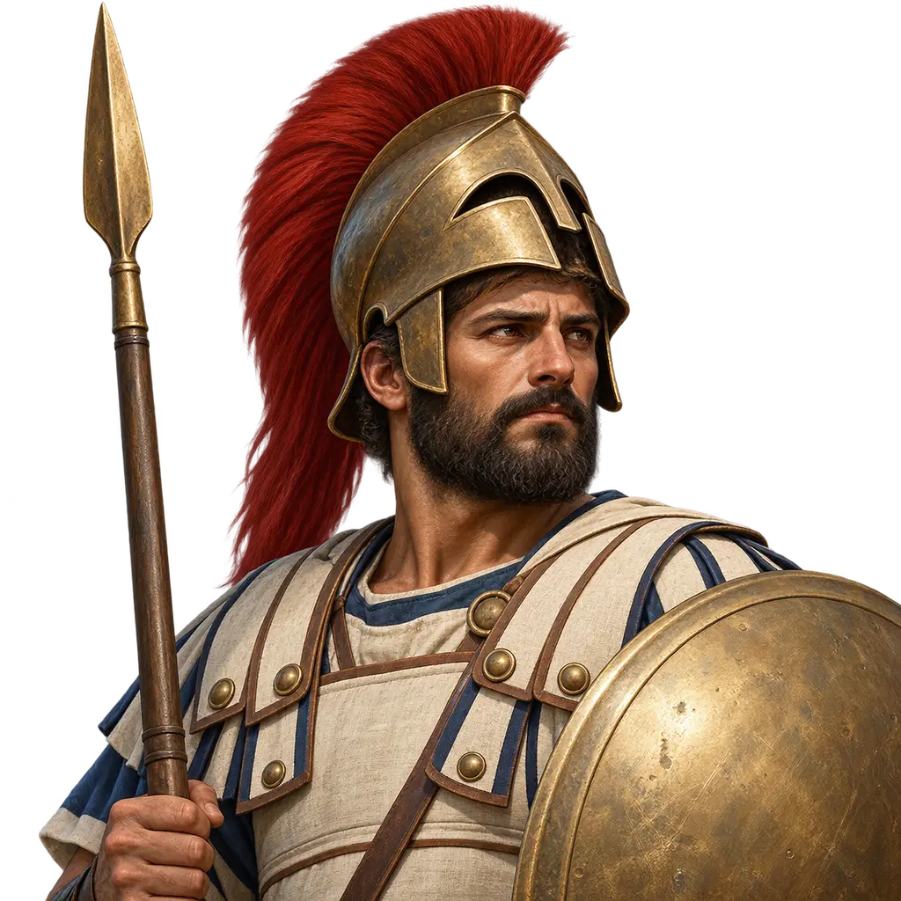
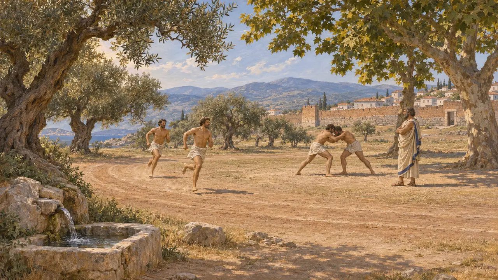
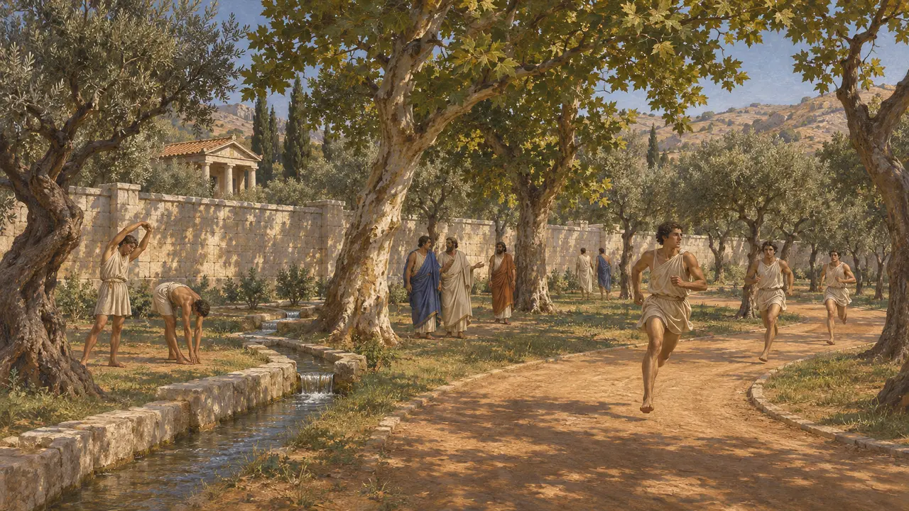
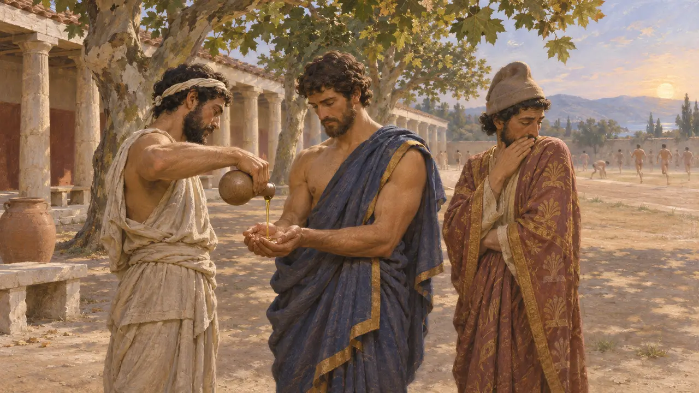
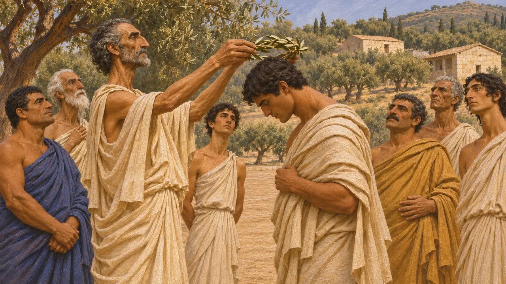
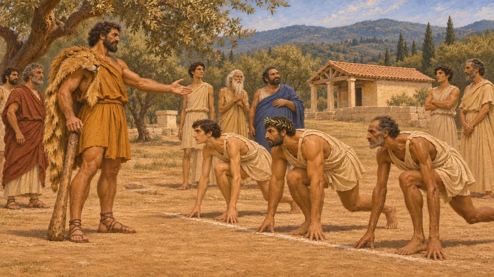

ورزشگاه
میدان تمرین یونانی برای ورزشکاران و شهروندان جوان، سدهٔ ششم تا پنجم پ.م.
ورزشگاه جایی بود که مردان یونانی در آن، معمولاً برهنه، ورزش میکردند، میدویدند و کشتی میگرفتند تا برای جنگ و برای مسابقههایی چون بازیهای المپیا آماده شوند. در سالهای جنگهای ایران و یونان، ورزشگاه احتمالاً هنوز زمینی باز و آبیاریشده با درختان سایهدار بود و اغلب در کنار پرستشگاهی قرار داشت. نویسندگان یونانی برهنگی ورزشی را نشانهٔ تفاوت یونانیان با مردمان قلمرو شاه شمردند.
در بازی: بازی ورزشگاه را در شهرهای یونانی بهصورت بنای خدماتی عرضه میکند، با یادداشتی دربارهٔ تاج زیتون برگرفته از هرودوت 8.26. نمایش آن در قالب یک بنای واحد تاریخ را ساده میکند، زیرا بیشتر میدانهای تمرین آن روزگار احتمالاً فضاهایی باز بودند.

بیشتر میدانی گشوده تا بنایی
مورد مناقشهاین واژه از gymnos به معنای برهنه میآید. بناهای ورزشگاهی کاوششده با رواقها و حیاطهای کشتی دیواردار، چنانکه در المپیا و دلفی، از سدهٔ چهارم و پس از آناند. برای اواخر سدهٔ ششم و اوایل سدهٔ پنجم، تاریخنگاران بیشتر به متون متأخرتر تکیه میکنند و دربارهٔ میزان ساختوساز آن روزگار بحث دارند. بیشترشان بر این باورند که نخستین ورزشگاهها میدانهای دویدن و زمینهایی باز با آب و درخت بودند، اغلب بیرون از دیوارهای شهر.
J. Delorme, Gymnasion, 1960; S. G. Miller, Ancient Greek Athletics, 2004

آکادمی، لوکیون و کونوسارگس
روایت باستانیدر دورهٔ کلاسیک، آتن سه میدان اینچنینی بیرون از دیوارهایش داشت که هر یک به پرستشگاهی پیوسته بود. نویسندگان متأخر ساختن دیواری پرهزینه در آکادمی را به هیپارخوس، پسر پیسیستراتوس، نسبت میدهند. پلوتارک میگوید کیمون پس از جنگهای پارسی آب به آکادمی رساند و در آن درخت کاشت و جایی خشک را به بیشهای سایهدار با راههایی برای دویدن بدل کرد.
Plutarch, Cimon 13; Suda; D. Kyle, Athletics in Ancient Athens, 1987

تمرین برهنه، رسمی یونانی
روایت باستانیتوسیدید میگوید اسپارتیان نخستین کسانی بودند که برای ورزش برهنه شدند و به تن خود روغن مالیدند، و اینکه لنگ بستن در بازیها تنها چند سال پیش از روزگار او کنار گذاشته شده بود. هرودوت یادآور میشود که نزد لیدیاییان، و تقریباً همهٔ مردمان غیریونانی، حتی دیده شدن مرد برهنه نیز ننگ بود. هرودوت همچنین بازمیگوید که اسکندرِ مقدونیه ناچار شد تبار یونانی خود را ثابت کند تا اجازه یابد در المپیا بدود.
Thucydides 1.6; Herodotus 1.10; Herodotus 5.22

تاجی از برگ زیتون در المپیا
روایت باستانیهرودوت میگوید جشنهای المپیک در سال 480 پ.م. با همان هفتههای نبرد ترموپیل همزمان افتاد و سان سپاه یونانیان را کُند کرد. به گفتهٔ او، پس از نبرد، فراریانی از آرکادیا به پارسیان گفتند که یونانیان سرگرم بازیها هستند و پاداش آن تاجی از برگ زیتون است. آنگاه تریتانتایخمس، پسر اردوان، به مردونیه گفت این مردان برای برتری رقابت میکنند، نه برای مال. هرودوت میافزاید که شاه او را به همین سبب ترسو شمرد.
Herodotus 7.206; Herodotus 8.26

هراکلس و بنیانگذاری بازیها
افسانهٔ متأخرسرودهای پیروزی پینداروس روایت میکنند که هراکلس بازیهای المپیک را بنیاد نهاد. تاریخ آغاز آشنای 776 پ.م. بر فهرستی از پیروزمندان تکیه دارد که هیپیاس الیسی حدود سال 400 پ.م.، دیرزمانی پس از رویدادهای ثبتشده در آن، فراهم آورد. پلوتارک خود هشدار داده بود که این فهرست پایهٔ استواری ندارد. از این رو تاریخ آغازین این بازیها بیشتر بر سنت استوار است.
Pindar, Olympian 10; Plutarch, Numa 1
منابع
- Herodotus 8.26
- Herodotus 7.206
- Thucydides 1.6
- Plutarch, Cimon 13
- D. Kyle, Athletics in Ancient Athens, 1987
- S. G. Miller, Ancient Greek Athletics, 2004